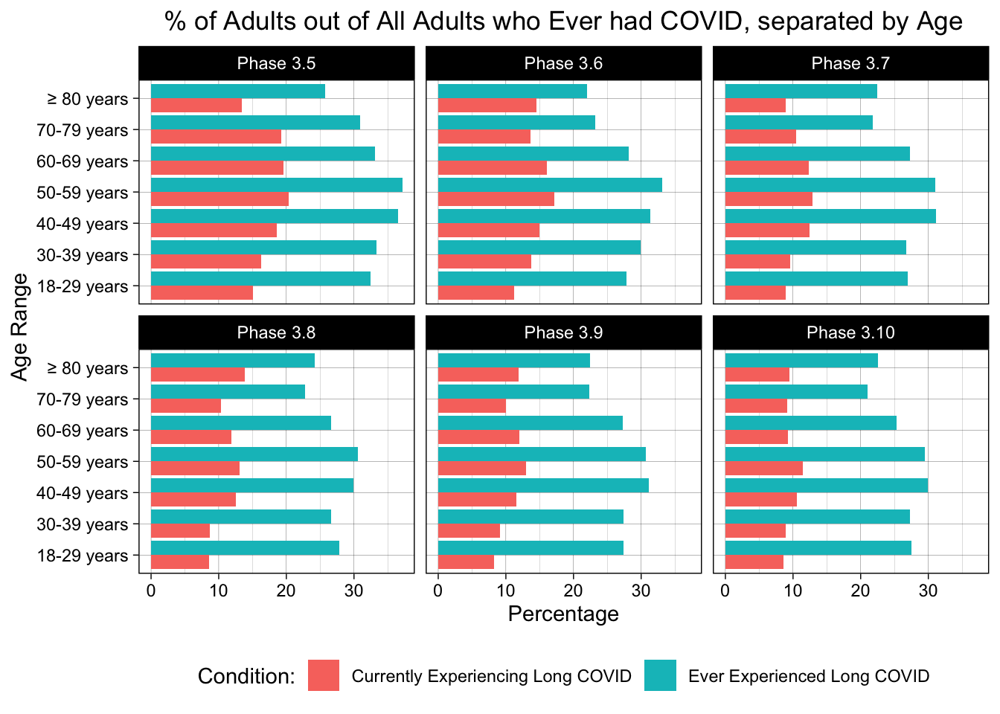
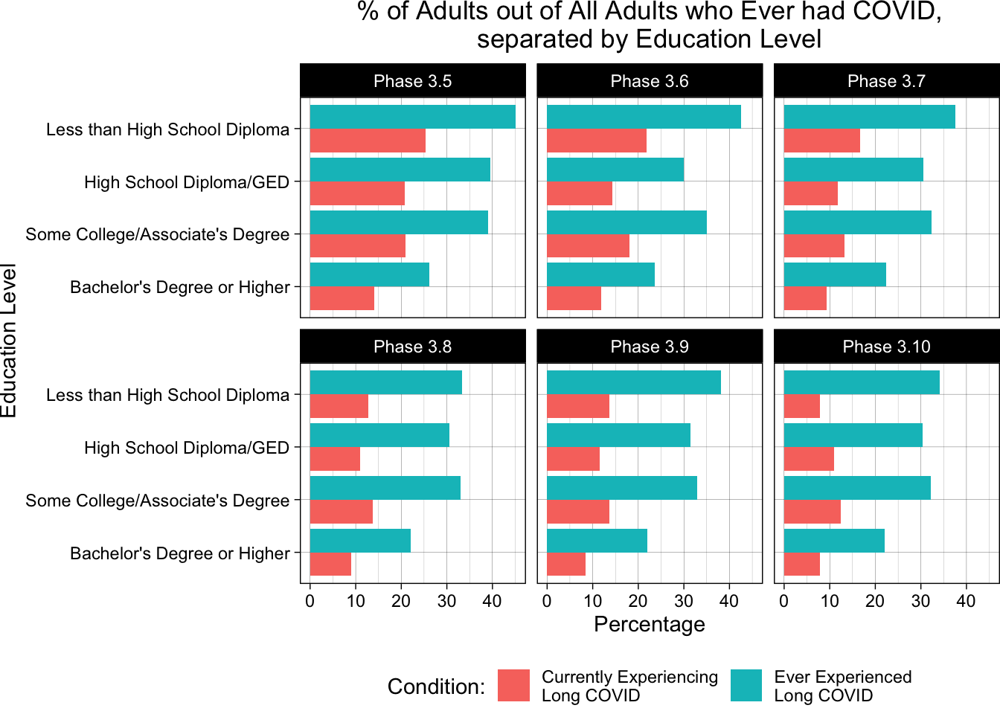
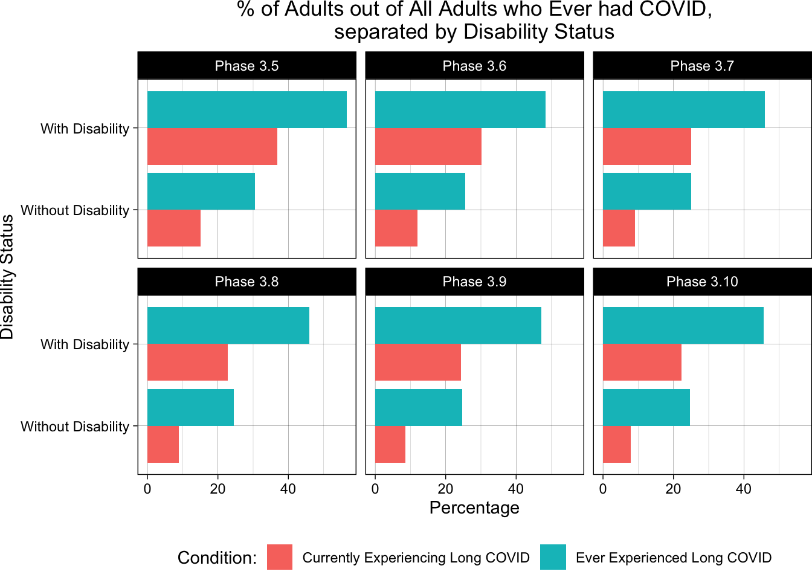

3.1 Investigating the Trends in Long COVID Prevalence
Our initial objective was to gain insight into the prevalence of Long COVID in the United States. Ultimately, our goal is to figure out what groups are affected most by Long COVID in order to best inform health policy officials when it comes to allocation of resources for diagnosis and treatment, but if Long COVID has low prevalence or shows decreasing trends in prevalence, these interventions might have limited efficacy. As such, it is important to first establish a baseline of what overall proportion of adults in the United States are either currently experiencing post-COVID-related symptoms, or have experienced such symptoms in the past.
To answer this question best, we chose to look at only rows in our dataset containing the National Estimates for Long COVID cases among adults in the U.S., as these rows will give us the best overview of trends in cases. We did so by first filtering our data to select the rows contianing a value of “National Estimate” in the Group column, and then only chose to keep the columns for Indicator, Group, Time.Period.Start.Date, Time.Period.End.Data, and Value.
Code
# Import Required Librarieslibrary(dplyr)library(ggplot2)library(forcats)# Import Datapcc <-read.csv("Post-COVID_Conditions.csv")# Filter the data according to the workflow aboveTimeData <- pcc %>%filter(Group =='National Estimate') %>%select(c(Indicator, Group, Time.Period.Start.Date, Time.Period.End.Date, Value))# Also need to convert the Time Period Colums to datesTimeData$Time.Period.Start.Date <-as.Date(TimeData$Time.Period.Start.Date, format ="%m/%d/%Y")#TimeData$Time.Period.Start.Date <- format(TimeData$Time.Period.Start.Date, "%B %d, %Y")TimeData$Time.Period.End.Date<-as.Date(TimeData$Time.Period.End.Date, format ="%m/%d/%Y")#TimeData$Time.Period.End.Date <- format(TimeData$Time.Period.End.Date, "%B %d, %Y")
With the data filtered, we now looked at each indicator one at a time to identify overall trends in Long COVID cases in the United States. Since we wanted to look at the prevalence of Long COVID, we first looked at adults that are currently experiencing Long COVID, either as a percentage of adults who ever had COVID or as a percentage of all adults in the U.S.
Code
CurrentExp <- TimeData %>%filter(Indicator =="Currently experiencing long COVID, as a percentage of adults who ever had COVID"| Indicator =="Currently experiencing long COVID, as a percentage of all adults")CurrentExp <-na.omit(CurrentExp)CurrentExp$Indicator <-recode(CurrentExp$Indicator, "Currently experiencing long COVID, as a percentage of adults who ever had COVID"="As a % of Adults who have ever had COVID", "Currently experiencing long COVID, as a percentage of all adults"="As a % of All Adults")ggplot(CurrentExp, aes(x = Time.Period.Start.Date, y = Value, color = Indicator)) +geom_line() +geom_point() +ggtitle("Currently Experiencing Long COVID") +xlab("Data Collection Start Date") +ylab("Percentage") +scale_x_date(labels = scales::date_format("%b, %Y"), breaks ="2 month") +theme_linedraw() +theme(plot.title =element_text(hjust =0.5), legend.position ="bottom") +labs(color =NULL)
From the graph, we see that overall, the proportion of adults that are currently experiencing Long COVID has consistently decreased over the course of the data collection across both cohorts, particularly when looking at the adults that are currently experiencing Long COVID and comparing it to all adults who have ever had COVID. However, this trend seems to be leveling off around 10%, suggesting that around 10% of adults that get COVID also suffer from post-COVID symptoms of some severity. Since this percentage is relatively high, support for Long COVID diagnosis and treatment still should be advised.
The dataset also contains responses for adults that have ever experienced Long COVID, either as a percentage of adults who have ever had COVID or as a percentage of all adults. In order to see how prevalent Long COVID has been over the course of the pandemic, we also wanted to see how trends in the overall number of adults impacted by Long COVID have changed over the survey duration. For this analysis, we again only selected rows in our dataset containing the National Estimates for Long COVID cases among adults in the U.S.
Code
EverExp <- TimeData %>%filter(Indicator =="Ever experienced long COVID, as a percentage of adults who ever had COVID"| Indicator =="Ever experienced long COVID, as a percentage of all adults")EverExp <-na.omit(EverExp)EverExp$Indicator <-recode(EverExp$Indicator, "Ever experienced long COVID, as a percentage of adults who ever had COVID"="As a % of Adults who have ever had COVID", "Ever experienced long COVID, as a percentage of all adults"="As a % of All Adults")ggplot(EverExp, aes(x = Time.Period.Start.Date, y = Value, color = Indicator)) +geom_line() +geom_point() +ggtitle("Ever Experienced Long COVID") +xlab("Data Collection Start Date") +ylab("Percentage") +scale_x_date(labels = scales::date_format("%b, %Y"), breaks ="2 month") +theme_linedraw() +theme(plot.title =element_text(hjust =0.5), legend.position ="bottom") +labs(color =NULL)
In the graph above, we expect the proportion of adults who have ever experienced Long COVID to increase, as each time the survey is answered, all people that have previously had Long COVID should respond yes, along with all people that have newly contacted Long COVID. While this trend is observed in the proportion of adults who have ever experienced Long COVID as a percentage of all adults, it is not the case for the proportion of adults who have ever experienced Long COVID as a percentage of all adults who ever had COVID. It is possible that this result is an artifact of the data collection process, but the exact reason cannot be uncovered by information in the dataset alone.
3.2 Determining the Key Factors that Affect Long COVID Suspectibility
Using the graphs below, we attempted to get an understanding regarding which factors seem to have an effect on the likelihood of developing long COVID and how large of an effect that can be.
Code
# Preprocessingpcc <- pcc %>%mutate(Phase =factor(ifelse(Phase ==3.1 ,"3.10", as.character(Phase)), levels =c("3.5","3.6","3.7","3.8","3.9","3.10"))) %>%mutate(Subgroup =factor(Subgroup,levels(fct_relevel(pcc$Subgroup,"Less than a high school diploma","High school diploma or GED","Some college/Associate's degree","Bachelor's degree or higher")))) %>%select(Indicator, Group, Subgroup, Phase, Value) %>%na.omit()
Code
pcc %>%filter(Group =="By Age") %>%filter(Indicator =="Ever experienced long COVID, as a percentage of adults who ever had COVID"| Indicator =="Currently experiencing long COVID, as a percentage of adults who ever had COVID") %>%select(Subgroup, Phase, Value, Indicator) %>%ggplot(aes(x = Subgroup, y = Value, fill = Indicator)) +geom_bar(stat ="summary",fun="mean", position='dodge') +facet_wrap(~ Phase) +scale_fill_discrete(labels =c("Currently experiencing long COVID", "Ever experienced long COVID")) +labs(title ="Average Percentage per Age Group", x ="Age Group", y ="Percentage") +theme(plot.title =element_text(hjust =0.5), legend.position ="bottom") +coord_flip()

From the graph we can observe that age seems to play a role, to some extend, since for all phases the same pattern was observed. Middle aged people seem to be more susceptible, with a peak at 50-59 years old.
However, as time passes, the differences seem to get smaller between age groups, almost disappearing but the pattern for the people who claim that they have experienced long COVID at some point, remains unchanged. It is also worth pointing out that the percentage of people above 80 years old experiencing long COVID during phases 3.6 and 3.8 increased.
Lastly, we can notice that while the percentages of people below the age of 40 experiencing long COVID during each period are lower than that of people above the age of 60, the opposite can be observed when it comes to the percentages of people ever experiencing long COVID. This could be an indicator that younger people might be more susceptible to experiencing long COVID but their symptoms pass quicker compared to older people who might be less susceptible but experience the symptoms for longer.
Code
pcc %>%filter(Group =="By Sex") %>%filter(Indicator =="Ever experienced long COVID, as a percentage of adults who ever had COVID"| Indicator =="Currently experiencing long COVID, as a percentage of adults who ever had COVID") %>%select(Subgroup, Phase, Value, Indicator) %>%ggplot(aes(x = Subgroup, y = Value, fill = Indicator)) +geom_bar(stat ="summary",fun="mean", position='dodge') +facet_wrap(~ Phase) +scale_fill_discrete(labels =c("Currently experiencing long COVID", "Ever experienced long COVID")) +labs(title ="Average Percentage per Sex", x ="Sex", y ="Percentage") +theme(plot.title =element_text(hjust =0.5), legend.position ="bottom") +coord_flip()
Regarding Sex as a factor, it seems to play a more crucial role since the differences between the percentages of females and males are much more significant. Females have been and still are more susceptible than men , more specifically men’s percentages are 2/3 of the female ones.
Code
pcc %>%filter(Group =="By Race/Hispanic ethnicity") %>%filter(Indicator =="Ever experienced long COVID, as a percentage of adults who ever had COVID"| Indicator =="Currently experiencing long COVID, as a percentage of adults who ever had COVID") %>%select(Subgroup, Phase, Value, Indicator) %>%ggplot(aes(x = Subgroup, y = Value, fill = Indicator)) +geom_bar(stat ="summary",fun="mean", position='dodge') +facet_wrap(~ Phase) +scale_fill_discrete(labels =c("Currently experiencing long COVID", "Ever experienced long COVID")) +labs(title ="Average Percentage per Race/Hispanic Ethnicity", x ="Race/Hispanic Ethnicity", y ="Average Percentage") +theme(plot.title =element_text(hjust =0.5), legend.position ="bottom") +coord_flip()
Concerning the Race/Hispanic Ethnicity, Non-Hispanic Asian people are by far the least susceptible to developing long COVID while the Non-Hispanic of multiple races or races other than White, Black, Asian or Hispanic/Latino are the most susceptible. All the other races stand. in between and have almost equal percentages.
Code
pcc %>%filter(Group =="By Gender identity") %>%filter(Indicator =="Ever experienced long COVID, as a percentage of adults who ever had COVID"| Indicator =="Currently experiencing long COVID, as a percentage of adults who ever had COVID") %>%select(Subgroup, Phase, Value, Indicator) %>%ggplot(aes(x = Subgroup, y = Value, fill = Indicator)) +geom_bar(stat ="summary",fun="mean", position='dodge') +facet_wrap(~ Phase) +scale_fill_discrete(labels =c("Currently experiencing long COVID", "Ever experienced long COVID")) +labs(title ="Average Percentage per Gender Identity", x ="Gender Identity", y ="Average Percentage") +theme(plot.title =element_text(hjust =0.5), legend.position ="bottom") +coord_flip()

We already covered the comparison between males and females but now we can notice that transgender individuals’ percentages are 2-3 times larger than those of males and sometimes double of that of females as well. Those differences are observed among the persons experiencing long COVID each period but for the ones claiming to ever have experienced, the pattern is the same but the differences are not that big. The percentages of transgender people still remain almost double of the corresponding male ones.
However, we can notice that the dataset is not so trustworthy because of the sampling not being representative. one would expect the “ever experienced” percentage to rise during every period since this is a cumulative indicator by default. In reality though, the percentages of the cis-gender individuals remain relatively stable while for the transgender ones there is a significant increase on phases 3.5 and 3.8.
The fact that the percentages of each category remain stable can maybe be explained by the fact that the long COVID symptoms remain for years sometimes so since the data were gathered bi-weekly, each phase lasts 2 months and we don’t have more than 1.5 years of data, not enough time passed for others to pinpoint their symptoms as long COVID ones.
Code
pcc %>%filter(Group =="By Sexual orientation") %>%filter(Indicator =="Ever experienced long COVID, as a percentage of adults who ever had COVID"| Indicator =="Currently experiencing long COVID, as a percentage of adults who ever had COVID") %>%select(Subgroup, Phase, Value, Indicator) %>%ggplot(aes(x = Subgroup, y = Value, fill = Indicator)) +geom_bar(stat ="summary",fun="mean", position='dodge') +facet_wrap(~ Phase) +scale_fill_discrete(labels =c("Currently experiencing long COVID", "Ever experienced long COVID")) +labs(title ="Average Percentage per Sexual orientation", x ="Sexual orientation", y ="Average Percentage") +theme(plot.title =element_text(hjust =0.5), legend.position ="bottom") +coord_flip()

We wouldn’t expect the sexual orientation to play a role to whether someone develops long COVID but according to those graphs we can deduct that while the percentages of straight and gay/lesbian are roughly equal, the percentages of bisexual people are about one third higher for almost all periods.
Code
pcc %>%filter(Group =="By Education") %>%filter(Indicator =="Ever experienced long COVID, as a percentage of adults who ever had COVID"| Indicator =="Currently experiencing long COVID, as a percentage of adults who ever had COVID") %>%select(Subgroup, Phase, Value, Indicator) %>%ggplot(aes(x = Subgroup, y = Value, fill = Indicator)) +geom_bar(stat ="identity", position='dodge') +facet_wrap(~ Phase) +scale_fill_discrete(labels =c("Currently experiencing long COVID", "Ever experienced long COVID")) +labs(title ="Average Percentage per Education", x ="Education level", y ="Average Percentage") +theme(plot.title =element_text(hjust =0.5), legend.position ="bottom") +coord_flip()
When the level of education is concerned, we can observe that the higher the educational level, the lower the percentages were at first. But as the time/phases pass, the percentage of people having a bachelor’s degree or higher lies always a little lower while all the other percentages are roughly equal, with the percentage of people with some college/associate’s degree always being slighlty higher.
Code
pcc %>%filter(Group =="By Disability status") %>%filter(Indicator =="Ever experienced long COVID, as a percentage of adults who ever had COVID"| Indicator =="Currently experiencing long COVID, as a percentage of adults who ever had COVID") %>%select(Subgroup, Phase, Value, Indicator) %>%ggplot(aes(x = Subgroup, y = Value, fill = Indicator)) +geom_bar(stat ="summary",fun="mean", position='dodge') +facet_wrap(~ Phase) +scale_fill_discrete(labels =c("Currently experiencing long COVID", "Ever experienced long COVID")) +labs(title ="Average Percentage per Disability status", x ="Disability status", y ="Average Percentage")+theme(plot.title =element_text(hjust =0.5), legend.position ="bottom") +coord_flip()
Whether someone is disabled or not seems to be the most impactful factor, since disabled people percentages are 2-3 times higher than those of the non-disabled ones and this pattern can be observed during all phases and both among those claiming to be currently experiencing during each phase and those claiming to have ever experienced.
3.3 Exploring the impact of Long COVID on activity limitations
In our data set, the CDC measured the impact of Long COVID on overall health using questions about activity, looking at both those currently experiencing any activity limitations due to Long COVID and those currently experiencing significant activity limitations due to Long COVID (for more details as to the differences between these groups, please see the data overview section). To get an overview of the effect of Long COVID on health, we first wanted to see if Long COVID truly has a tangible impact on health. To do so, we returned to using national estimates of Long COVID (stored in rows contianing a value of “National Estimate” in the Group column), and specifically focused on the indicators of activity limiations over time.
Code
# Can re-use the TimeData dataframe that we created earlier to analyze time series data for question 1:AnyActivityLimits <- TimeData %>%filter(Indicator =="Any activity limitations from long COVID, as a percentage of adults who currently have long COVID"| Indicator =="Any activity limitations from long COVID, as a percentage of all adults")AnyActivityLimits <-na.omit(AnyActivityLimits)AnyActivityLimits$Indicator <-recode(AnyActivityLimits$Indicator, "Any activity limitations from long COVID, as a percentage of adults who currently have long COVID"="As a % of Adults who have ever had Long COVID", "Any activity limitations from long COVID, as a percentage of all adults"="As a % of All Adults")ggplot(AnyActivityLimits, aes(x = Time.Period.Start.Date, y = Value, color = Indicator)) +geom_line() +geom_point() +ggtitle("Currently experiencing any Activity Limitations") +xlab("Data Collection Start Date") +ylab("Percentage") +scale_x_date(labels = scales::date_format("%b, %Y"), breaks ="3 month") +theme_linedraw() +theme(plot.title =element_text(hjust =0.5), legend.position ="bottom") +labs(color =NULL)
The graph above suggests that most adults with Long COVID are also experiencing some degree of activity limitations, as throughout the past year the proportion of adults that have experienced any activity limitations out of all adults thaat have ever had Long COVID has hovered around 80%. While much lower, there is also a noticable proportion of adults with activity limitations from Long COVID out of all adults, around 6%. Additionally, this data suggests that this problem is pervasive, as the proportion of adults experiencing Long COVID-attributed activity limitations has remained consistent since September 2022.
The dataset also let us look at those experiencing significant activity limitations, in a similar analysis to the above.
Code
SignifActivityLimits <- TimeData %>%filter(Indicator =="Significant activity limitations from long COVID, as a percentage of adults who currently have long COVID"| Indicator =="Significant activity limitations from long COVID, as a percentage of all adults")SignifActivityLimits <-na.omit(SignifActivityLimits)SignifActivityLimits$Indicator <-recode(SignifActivityLimits$Indicator, "Significant activity limitations from long COVID, as a percentage of adults who currently have long COVID"="As a % of Adults who have ever had Long COVID", "Significant activity limitations from long COVID, as a percentage of all adults"="As a % of All Adults")ggplot(SignifActivityLimits, aes(x = Time.Period.Start.Date, y = Value, color = Indicator)) +geom_line() +geom_point() +ggtitle("Currently experiencing Significant Activity Limitations") +xlab("Data Collection Start Date") +ylab("Percentage") +scale_x_date(labels = scales::date_format("%b, %Y"), breaks ="3 month") +theme_linedraw() +theme(plot.title =element_text(hjust =0.5), legend.position ="bottom") +labs(color =NULL)
Here, the same trends as above are visible, albeit to a lesser extent. From this information, we concluded that of those that experience post-COVID symptoms, many (around 25%) experience some form of a lasting, significant impact to their overall health. There is also a non-zero proportion of all adults in the U.S. that experience significant health ramifications related to COVID (around 1.5%), suggesting that COVID presents a significant risk for developing adverse health events even when looking at the entire U.S. population.